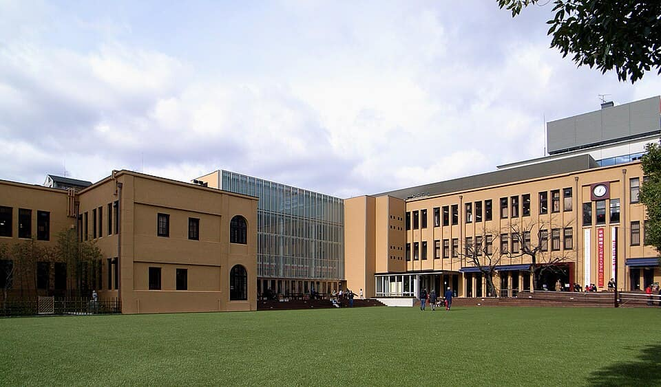

1 Must see within Central
'Kyoto's Kitchen' — a narrow five-block covered street of more than a hundred food shops (the first opened around 1310): pickles, fresh yuba, dashi-maki tamago, seasonal Kyoto produce and knives.
Nakagyō-ku, Kyoto, Japan
Recommended by Japan-guide , Kyoto City Tourism , Wikipedia
2 Must see within Central
Lantern-lit lane of teahouses and restaurants squeezed between the Kamo River and Kiyamachi — one of Kyoto's five geisha districts, with summer kawayuka dining platforms over the river.
Nakagyō-ku, Kyoto, Japan
Recommended by Japan-guide , Kyoto City Tourism , Wikipedia
3 Must see within Central
Head temple of the Ōtani branch of Jōdo Shinshū near Kyoto Station; its Goeidō founder's hall is Kyoto's largest wooden structure. Free to enter.
Shimogyō-ku, Kyoto, Japan
Recommended by Japan-guide , Kyoto City Tourism , Wikipedia
4 Must see within Central
JR West's museum (2016) by Umekōji Park with more than 50 retired trains, from steam locomotives in a working roundhouse to shinkansen; closed Wednesdays.
Shimogyō-ku, Kyoto, Japan
Recommended by Japan-guide , Kyoto City Tourism , Wikipedia

Photo: ja:利用者:珈琲ルンバ · CC BY-SA 3.0 · Wikimedia Commons (resized)
5 Must see within Central
Japan's first manga museum, in a 1929 elementary-school building by Karasuma-Oike Station, with some 300,000 items and walls of manga you can pull down and read.
Nakagyō-ku, Kyoto, Japan
Recommended by Japan-guide , Kyoto City Tourism , Wikipedia
6 Must see within Central · Wagashi
An ohagi shop founded in 1897 using Tokachi azuki and Shiga mochi rice, which often sells out within an hour of opening.
Near Gojō Station, Shimogyō-ku, Kyoto
Recommended by Leaf Kyoto (京都リーフ) , Rurubu (JTB Publishing, rurubu.jp) , Mapple (Shobunsha)
7 Must see within Central
Head temple of the Jōdo Shinshū Hongwanji-ha, a short walk from Kyoto Station, with vast Founder's and Amida halls and Momoyama-era gates; UNESCO 688-016.
Shimogyō-ku, Kyoto, Japan
Recommended by UNESCO , Wikipedia
8 Must see within Central
The Tokugawa shoguns' Kyoto residence (1603), whose Ninomaru Palace 'nightingale floors' chirp underfoot; UNESCO 688-017.
Nakagyō-ku, Kyoto, Japan
Recommended by UNESCO , Wikipedia
9 Must see within Central · Ramen
The Takabashi ramen institution founded in 1947, five minutes' walk from Kyoto Station — the benchmark for Kyoto's soy-pork-bone style.
845 Higashishiokōji Mukaihata-chō, Shimogyō-ku, Kyoto 600-8216, Japan
Recommended by Leaf Kyoto (京都リーフ) , Culture Trip
10 Must see within Central · Kissaten
Kyoto's classic kissaten, in business since 1940; the retro main shop serves a 'Kyoto breakfast' available only at the flagship.
140 Dōyū-chō, Sakaimachi-dōri Sanjō-sagaru, Nakagyō-ku, Kyoto 604-8118, Japan
Recommended by Kyoto City Tourism , Japanese Wikipedia (ja.wikipedia.org)
11 Must see within Central · Soba
Founded in 1465 and billed as Japan's oldest soba restaurant; stock made with Kyoto well water and freshly boiled buckwheat noodles.
Nakagyō-ku, Kyoto, Japan
Recommended by Kyoto City Tourism , Time Out
12 Must see within Central · Kissaten
Kyoto's iconic 1934 meikyoku-kissa; in 2003 the first café in Japan registered as a national Tangible Cultural Property.
Nishikiyamachi-dōri by the Takase-gawa, Shimogyō-ku, Kyoto (1 min from Kyoto-Kawaramachi Stn)
Recommended by Kyoto City Tourism , Leaf Kyoto (京都リーフ)
13 Must see within Central · Kissaten
Family-run since 1950 at Sanjō-Kawaramachi — two floors, two coffees; a cornerstone of Kyoto's kissaten culture.
Sanjō-Kawaramachi, Nakagyō-ku, Kyoto
Recommended by Lonely Planet , Leaf Kyoto (京都リーフ)
14 Must see within Central · Ramen
A 10-seat downtown counter whose 100% seafood broth is the anti-kotteri Kyoto bowl; Leaf KYOTO reports nine straight years of Michelin Bib Gourmand.
Kawaramachi, Shimogyō-ku, Kyoto
Recommended by Leaf Kyoto (京都リーフ) , Inside Kyoto (Chris Rowthorn)
15 Must see within Central · Kaiseki
Two MICHELIN Stars (2026): the Kikunoi house's counter restaurant — Inside Kyoto calls it the more affordable, less orthodox of the two.
118 Saitō-chō, Shimogyō-ku, Kyoto 600-8012
Recommended by Michelin , Inside Kyoto (Chris Rowthorn)
16 Must see within Central · Kissaten
Retro Teramachi-arcade kissaten serving since 1932 — the French toast has been on the menu for 50 years.
537 Tenshōjimae-chō, Teramachi-dōri Sanjō-agaru, Nakagyō-ku, Kyoto
Recommended by Inside Kyoto (Chris Rowthorn) , Leaf Kyoto (京都リーフ)
17 Must see within Central · Kaiseki
Two MICHELIN Stars (promoted 2026) — kyō-ryōri in the Muromachi quarter; the abalone appetiser is an inspectors' favourite.
459 Kimbukicho, Nakagyo-ku, Kyoto, 604-0846, Japan
Recommended by Michelin
18 Must see within Central · International
New One MICHELIN Star 2026 — Korean royal court cuisine learned in Seoul, by Mibu-dera.
38 Mibu Tsujimachi, Nakagyo-ku, Kyoto, 604-8822, Japan
Recommended by Michelin
19 Must see within Central · Kaiseki
New One MICHELIN Star 2026 — a Nagasaki-accented Japanese counter in Shimogyō.
360 Gokuishicho, Shimogyo-ku, Kyoto, 600-8429, Japan
Recommended by Michelin
20 Must see within Central · International
One MICHELIN Star — Japanese technique with modern Italian flavour; the hamo-and-prosciutto is an inspectors' must-try.
2F, 287 Takoyakushicho, Nakagyo-ku, Kyoto, 604-0021, Japan
Recommended by Michelin
21 Must see within Central · International
One MICHELIN Star — Alexis Moko (Paris/London-trained) cooking French in an old merchant's house with Kyoto produce.
235-2 Tamauecho, Nakagyo-ku, Kyoto, 604-0005, Japan
Recommended by Michelin
22 Must see within Central · Kaiseki
One MICHELIN Star (2026) — sister of Jiki Miyazawa; its signature yaki-gomadōfu heralds each season.
557 Oecho, Shimogyo-ku, Kyoto, 600-8402, Japan
Recommended by Michelin
23 Must see within Central · Sushi
Seven-generation eel house (Michelin Bib Gourmand); Kantō-style steamed-then-grilled kabayaki, famous for the kinshi-don.
456 Matsugae-chō, Nakagyō-ku, Kyoto, Japan
Recommended by Michelin Bib
24 Must see within Central · Kaiseki
Three MICHELIN Stars (2026); a house that began as a travelling fishmonger, now led by sixth-generation head Motokazu Nakamura.
136 Matsushita-chō, Nakagyō-ku, Kyoto 604-8093, Japan
Recommended by Michelin
25 Must see within Central · Kaiseki
Michelin-listed obanzai counter on Pontochō serving Kyoto's home-style seasonal dishes.
200 Shimokoriki-chō, Nakagyō-ku, Kyoto 604-8016, Japan
Recommended by Michelin
26 Must see within Central · Izakaya
One MICHELIN Star yakitori counter; the name means 'the future of yakitori'.
292-1 Takoyakushi-chō, Nakagyō-ku, Kyoto
Recommended by Michelin
27 Must see within Central · International
One MICHELIN Star (2026) Italian: a chef trained in Italy giving the cooking a Japanese essence.
239 Kamihakusan-chō, Nakagyō-ku, Kyoto 604-0943
Recommended by Michelin
28 Worth the detour within Central
Nintendo's 1930s original head office (used until 1959), the 'Yamauchi Nintendo' plaques still on the façade, reopened April 2022 as a Tadao Ando-designed hotel; the exterior is viewable from the street.
Your guide’s note ★ Anime & pop culture — Nintendo — the building where the playing-card firm Marufuku/Yamauchi Nintendo was run before video games.
342 Kagiya-chō, Shōmen-dōri Kamogawa-nishi-iru, Shimogyō-ku, Kyoto
Recommended by Time Out , Michelin , Kyotocity
29 Worth the detour within Central
The official Pokémon store in Kyoto, reopened in March 2019 in SUINA Muromachi. A Pikachu dressed as a maiko and the legendary Lugia and Ho-Oh greet visitors, and it sells Kyoto-only goods.
Your guide’s note ★ Anime & pop culture — Pokémon — official Pokémon Center with Kyoto-exclusive maiko-Pikachu merchandise.
SUINA Muromachi 2F (Kyoto Economic Center), Shimogyō-ku, Kyoto (direct from Shijō / Karasuma stations)
Recommended by Walkerplus (kadokawa) , Famitsu (kadokawa Game Linkage) , Mapple (Shobunsha)
30 Worth the detour within Central
Nintendo's third official store in Japan, after Tokyo and Osaka, which opened on 17 October 2023 in its hometown. It has Mario and warp-pipe statues and Mario, Zelda, Splatoon and Animal Crossing merchandise.
Your guide’s note ★ Anime & pop culture — Nintendo (Mario, Zelda, Splatoon) — the company's official store in its home city.
Kyoto Takashimaya S.C. [T8] 7F, Shimogyō-ku, Kyoto
Recommended by Famitsu (kadokawa Game Linkage) , Anime News Network , Kyoto Shimbun
31 Worth the detour within Central · Sushi
The downtown eel specialist by Nishiki: crisp-skinned Kansai-style grilled unagi.
Shijō Sakai-machi, Nakagyō-ku, Kyoto (steps from Nishiki Market)
Recommended by Time Out , Inside Kyoto (Chris Rowthorn) , Savor Japan
32 Worth the detour within Central
Hiroshi Hara's 1997 glass-and-steel station building, built for the city's 1,200th anniversary — the giant atrium staircase climbs to a free rooftop skyway with city views.
Shimogyō-ku, Kyoto, Japan
Recommended by Japan-guide , Kyoto City Tourism
33 Worth the detour within Central
The 131-metre tower opposite Kyoto Station, the city's tallest structure; the observation deck at 100 m gives a 360° view to Osaka on clear days.
Shimogyō-ku, Kyoto, Japan
Recommended by Japan-guide , Wikipedia
34 Worth the detour within Central
Small shrine to Sugawara no Michizane at the east end of Nishiki Market, wedged into the Shinkyōgoku shopping arcade — its torii's ends literally run into the neighbouring buildings.
Nakagyō-ku, Kyoto, Japan
Recommended by Kyoto City Tourism , Wikipedia
35 Worth the detour within Central
City history-and-culture museum on Sanjō-dōri, partly housed in the 1906 red-brick former Bank of Japan Kyoto branch; regular film screenings.
Nakagyō-ku, Kyoto, Japan
Recommended by Kyoto City Tourism , Wikipedia
36 Worth the detour within Central
Hexagonal temple said to be founded by Prince Shōtoku, birthplace of ikebana — the Ikenobō school's headquarters and Ikebana Museum stand in its grounds.
Nakagyō-ku, Kyoto, Japan
Recommended by Kyoto City Tourism , Wikipedia
37 Worth the detour within Central
Modern inland aquarium (2012) in Umekōji Park, a 15-minute walk west of Kyoto Station, with a Kyoto-rivers zone of Japanese giant salamanders.
Shimogyō-ku, Kyoto, Japan
Recommended by Japan-guide , Wikipedia
38 Worth the detour within Central
Temple founded in 991 for Jizō, guardian of children, and HQ ground of the Shinsengumi — graves of commander Kondō Isami and members lie in its Mibu-zuka; famous for its Kyōgen mime plays.
Nakagyō-ku, Kyoto, Japan
Recommended by Kyoto City Tourism , Japanese Wikipedia (ja.wikipedia.org)
39 Worth the detour within Central
Higashi Hongan-ji's 17th-century detached garden ('Kikoku-tei'), a nationally designated Place of Scenic Beauty a short walk from Kyoto Station.
Shimogyō-ku, Kyoto, Japan
Recommended by Kyoto City Tourism , Japanese Wikipedia (ja.wikipedia.org)
40 Worth the detour within Central
Former inn for visiting daimyō, riddled with secret passages, trap doors and hidden escape routes; guided tours by reservation.
Nakagyō-ku, Kyoto, Japan
Recommended by Japan-guide , Japanese Wikipedia (ja.wikipedia.org)
41 Worth the detour within Central
Kyoto's oldest licensed pleasure quarter (1641): pass the Ōmon gate to Edo-period Wachigaiya and Sumiya, one of the city's largest machiya, now a seasonally opening museum of hospitality culture.
Shimogyō-ku, Kyoto, Japan
Recommended by Kyoto City Tourism , Wikipedia
42 Worth the detour within Central
Remnant of the imperial palace garden laid out with Heian-kyō in 794 — the 'Garden of the Holy Spring', a pond and island just south of Nijō Castle.
Nakagyō-ku, Kyoto, Japan
Recommended by Kyoto City Tourism , Wikipedia
43 Worth the detour within Central · Markets
A Nishiki fishmonger-grill since 1919 — grilled-fish skewers to eat walking the arcade.
Nishiki Market, Nakagyō-ku, Kyoto
Recommended by Matcha — Japan Travel Guide , Leaf Kyoto (京都リーフ)
44 Worth the detour within Central · Ramen
Kyoto Station's ramen street — eight branches of famous regional shops on the 10th floor.
10F, Kyoto Station Building, Shimogyō-ku, Kyoto
Recommended by Inside Kyoto (Chris Rowthorn) , Matcha — Japan Travel Guide
45 Worth the detour within Central · Izakaya
Bib Gourmand izakaya near Karasuma-Oike, famous for its iced sashimi bowl.
448 Tatsunoikecho, Nakagyo-ku, Kyoto, 604-8176, Japan
Recommended by Michelin Bib
46 Worth the detour within Central · Kaiseki
Bib Gourmand Japanese course in the Muromachi textile quarter — affordable Kyoto kappō.
185 Nakanonocho, Shimogyo-ku, Kyoto, 600-8435, Japan
Recommended by Michelin Bib
47 Worth the detour within Central · International
MICHELIN-listed contemporary cuisine at Hotel The Mitsui by Nijō Castle, built on Fushimi's water and dashi.
1F, Hotel The Mitsui Kyoto, 284 Nijo Aburanokojicho, Nakagyo-ku, Kyoto, 604-0051, Japan
Recommended by Michelin
48 Worth the detour within Central · Izakaya
Added by MICHELIN inspectors July 2026 — a sake-led izakaya that opens with soup and tsukuri.
242 Kugikakushicho, Shimogyo-ku, Kyoto, 600-8423, Japan
Recommended by Michelin
49 Worth the detour within Central · International
MICHELIN-listed bistro by an Alsace-trained chef — the city's choucroute address.
358 Shimizucho, Nakagyo-ku, Kyoto, 604-0911, Japan
Recommended by Michelin
50 Worth the detour within Central · Kaiseki
Added by MICHELIN inspectors July 2026 — ryōtei-trained chef cooking à la carte in an alley machiya.
203-1 Kagiyacho, Shimogyo-ku, Kyoto, 600-8057, Japan
Recommended by Michelin
51 Worth the detour within Central · Kaiseki
Added by MICHELIN inspectors July 2026 — a charcoal-fire (sumi ryōri) specialist.
542-2 Bishamoncho, Nakagyo-ku, Kyoto, 604-0981, Japan
Recommended by Michelin
52 Worth the detour within Central · International
Added by MICHELIN inspectors July 2026 — contemporary cooking 'expressing Japanese spirit through Western technique'.
534-39 Ebisucho, Nakagyo-ku, Kyoto, 604-8005, Japan
Recommended by Michelin
53 Worth the detour within Central · International
MICHELIN-listed cross-cultural (French/Japanese/Chinese) cooking in a Nakagyō machiya; the Ōhara-vegetable salad is the calling card.
186 Tawarayacho, Nakagyo-ku, Kyoto, 604-0952, Japan
Recommended by Michelin
54 Worth the detour within Central · Okonomiyaki
Bib Gourmand kushiage counter — inventive deep-fried skewers in extraordinary variety.
310-10 Uradeyamacho, Nakagyo-ku, Kyoto, 604-8155, Japan
Recommended by Michelin Bib
55 Worth the detour within Central · Wagyu
MICHELIN-listed (2026) Teramachi-Sanjō sukiyaki house (est. 1873), served table-side by nakai-san.
405 Sakuranocho, Nakagyo-ku, Kyoto, 604-8035, Japan
Recommended by Michelin
56 Worth the detour within Central · Tempura
MICHELIN-listed (2026) tempura counter off Teramachi.
299 Shimohakusancho, Nakagyo-ku, Kyoto, 604-8085, Japan
Recommended by Michelin
57 Worth the detour within Central · Ramen
Michelin Bib Gourmand plant-based ramen bar in central Kyoto.
146 Umenoki-chō, Nakagyō-ku, Kyoto 604-0905, Japan
Recommended by Michelin Bib
58 Worth the detour within Central · Ramen
Michelin Bib Gourmand ramen shop west of Kyoto Station whose signature is a scallop and Japanese (sanshō) pepper ramen.
12-5 Nishishichijō Kakegoshi-chō, Shimogyō-ku, Kyoto 600-8881, Japan
Recommended by Michelin Bib
59 Worth the detour within Central · Kaiseki
Michelin Bib Gourmand 'place of rice' run by a rice-loving owner, serving small plates built on seafood and citrus from his native Ehime.
534-1 Yawata-chō, Shimogyō-ku, Kyoto 600-8455, Japan
Recommended by Michelin Bib
60 Worth the detour within Central · Soba
Michelin-listed soba restaurant in central Nakagyō.
691 Maruya-chō, Nakagyō-ku, Kyoto 604-0917, Japan
Recommended by Michelin
61 Worth the detour within Central · Soba
Michelin-listed soba restaurant in Shimogyō.
533-3 Motoshiogama-chō, Shimogyō-ku, Kyoto 600-8119, Japan
Recommended by Michelin
62 Worth the detour within Central · Izakaya
New Michelin Bib Gourmand (2026) on Fuyachō-dōri, built around seafood from Wakasa Bay and local Fukui sake.
618 Tachibana-chō, Nakagyō-ku, Kyoto 604-0944, Japan
Recommended by Michelin Bib
63 Worth the detour within Central · Soba
Michelin Bib Gourmand (2025) creative soba house; the famous 'Daigo Soba' is blanketed in Parmigiano Reggiano in imitation of daigo, an ancient Japanese cheese.
321-2 Shinnyodō-chō, Nakagyō-ku, Kyoto 604-0853, Japan
Recommended by Michelin Bib
64 Worth the detour within Central · Kaiseki
One MICHELIN Star Japanese (kaiseki) restaurant in Nakagyō.
515 Aneishinotōin-chō, Nakagyō-ku, Kyoto 604-8273, Japan
Recommended by Michelin
65 Worth the detour within Central · Kaiseki
One MICHELIN Star Japanese (kaiseki) restaurant in Nakagyō.
155 Mukadeya-chō, Nakagyō-ku, Kyoto 604-0805, Japan
Recommended by Michelin
66 Worth the detour within Central · Kaiseki
One MICHELIN Star Japanese (kaiseki) restaurant in Nakagyō.
136 Kinuya-chō, Nakagyō-ku, Kyoto 604-0804, Japan
Recommended by Michelin
67 Worth the detour within Central · Kaiseki
One MICHELIN Star Japanese (kaiseki) restaurant in Nakagyō.
122-1 Shikiami-chō, Nakagyō-ku, Kyoto 604-8261, Japan
Recommended by Michelin
68 Worth the detour within Central · Kaiseki
One MICHELIN Star Japanese (kaiseki) restaurant in Nakagyō.
92-12 Enoki-chō, Nakagyō-ku, Kyoto 604-0931, Japan
Recommended by Michelin
69 Worth the detour within Central · Kaiseki
One MICHELIN Star Japanese (kaiseki) restaurant in Nakagyō.
679 Maruki-zaimoku-chō, Nakagyō-ku, Kyoto 604-8106, Japan
Recommended by Michelin
70 Worth the detour within Central · Kaiseki
One MICHELIN Star Japanese (kaiseki) restaurant in Nakagyō.
553-1 Yaoya-chō, Nakagyō-ku, Kyoto 604-8123, Japan
Recommended by Michelin
71 Worth the detour within Central · Izakaya
Michelin Bib Gourmand izakaya ('sake and fish') whose cooking is anchored by a kombu and bonito dashi.
559-1 Tōrō-chō, Shimogyō-ku, Kyoto 600-8401, Japan
Recommended by Michelin Bib
72 Worth the detour within Central · Sushi
Michelin Bib Gourmand sushi shop in Nakagyō delivering Kyoto-style sushi at a modest price.
41-2 Koromonotana-chō, Nakagyō-ku, Kyoto 604-8203, Japan
Recommended by Michelin Bib
73 Worth the detour within Central · Kaiseki
Michelin Bib Gourmand Japanese kitchen whose inventive, patient cooking includes a salad dressed with heshiko mackerel.
456-2 Temma-chō, Shimogyō-ku, Kyoto 600-8024, Japan
Recommended by Michelin Bib
74 Worth the detour within Central · Kaiseki
Michelin Bib Gourmand washoku with ingenious touches — fluffy potato salad, a minced cutlet with a hint of duck, and a thick saba-zushi roll.
230-2 Shimmei-chō, Shimogyō-ku, Kyoto 600-8092, Japan
Recommended by Michelin Bib
75 Worth the detour within Central · Tempura
One MICHELIN Star tempura counter by the Kamo River, in the Ritz-Carlton.
B1F The Ritz-Carlton Kyoto, Nakagyō-ku, Kyoto
Recommended by Michelin
76 Worth the detour within Central · Izakaya
MICHELIN-selected yakitori counter downtown.
B1F, 612 Tachibana-chō, Nakagyō-ku, Kyoto
Recommended by Michelin
77 Worth the detour within Central · Izakaya
MICHELIN-listed yakitori and chicken-speciality restaurant.
554 Sangen-chō, Shimogyō-ku, Kyoto 600-8097
Recommended by Michelin
78 Worth the detour within Central · Izakaya
MICHELIN-listed yakitori counter in Nakagyō.
237 Daimonji-chō, Nakagyō-ku, Kyoto 604-8315
Recommended by Michelin
79 Worth the detour within Central · International
One MICHELIN Star Italian; the chef trained in northern Italy and Kyoto.
2F, 172 Higashisakai-chō, Shimogyō-ku, Kyoto 600-8217
Recommended by Michelin
80 Worth the detour within Central · International
One MICHELIN Star counter French in a townhouse; every dish shaped by wood fire.
183-4 Fudō-chō, Nakagyō-ku, Kyoto 604-8215
Recommended by Michelin